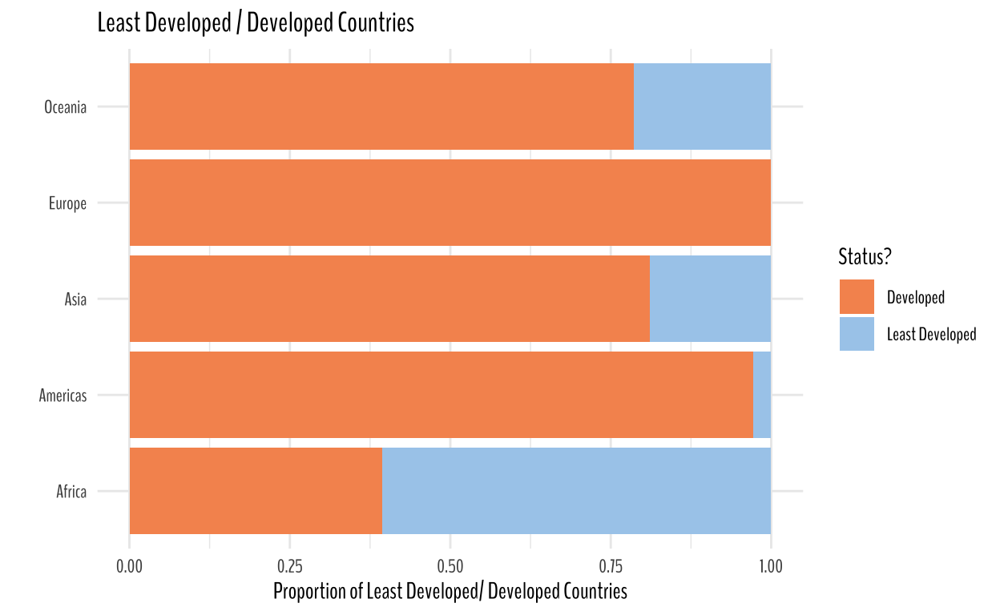
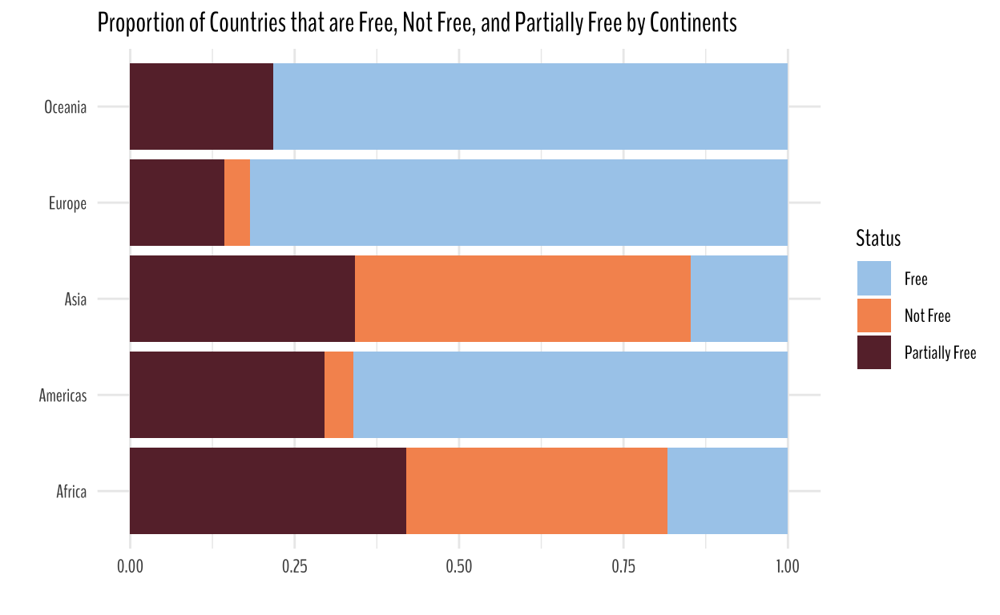
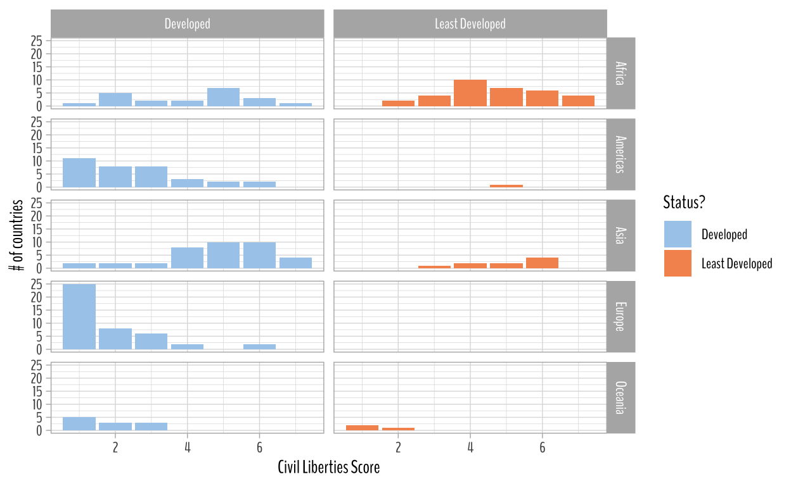
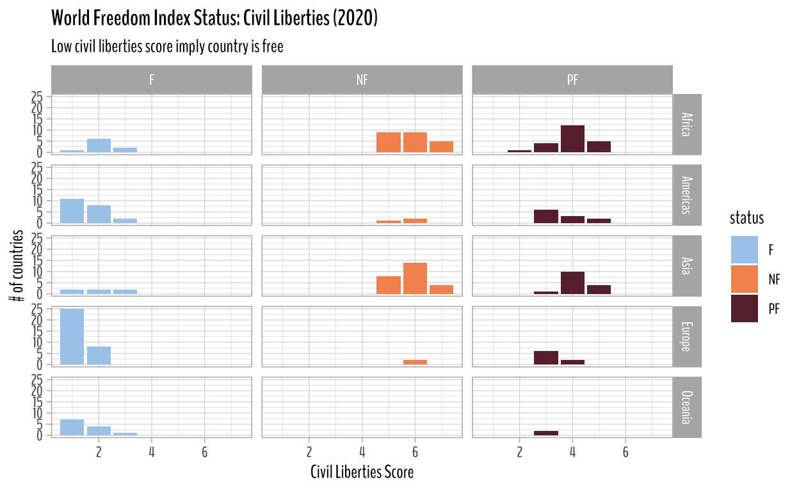
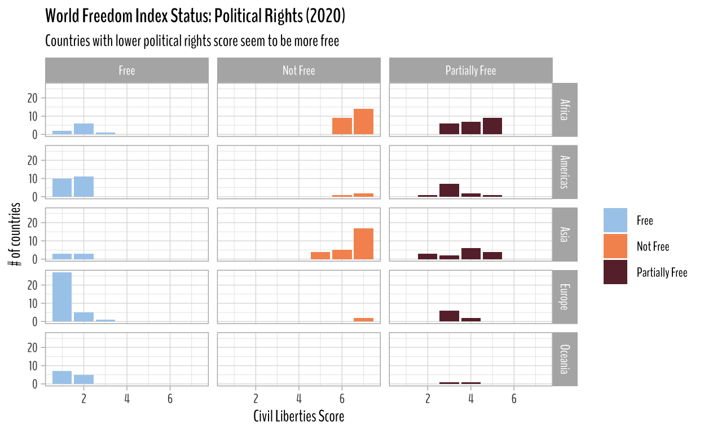
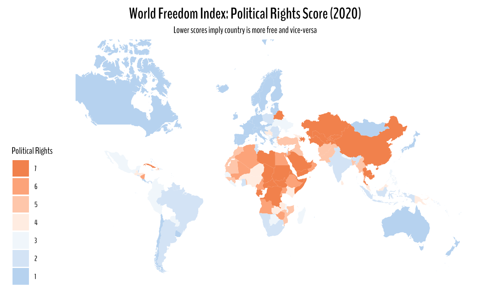
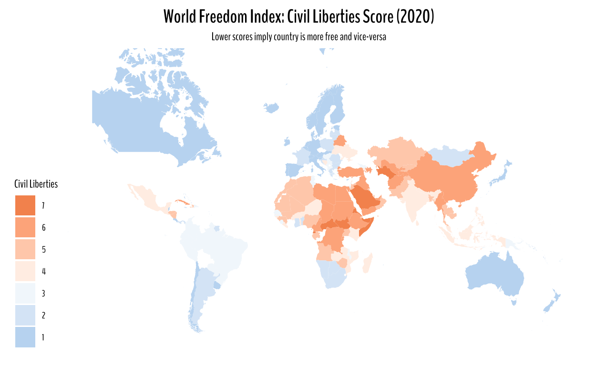
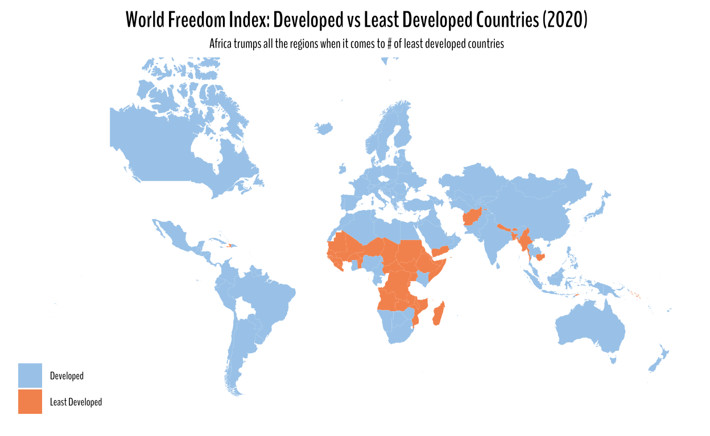

I will be exploring how civil liberty and political rights score has changed over time across different regions of the world.
# Analysis Pack
library(tidyverse)
library(tidytuesdayR)
library(scales)
library(infer)
# Theming Pack
library(nationalparkcolors)
library(paletteer)
# Styling Pack
library(reactable)
library(reactablefmtr)
library(showtext)
library(showtextdb)
library(extrafont)
library(extrafontdb)
library(gganimate)
font_add_google("BenchNine", family = "BenchNine")
showtext_auto()
Pulling this week’s #TidyTuesday data using tidytuesdayR package.
tuesdata <- tidytuesdayR::tt_load(2022, week = 8)
Downloading file 1 of 1: `freedom.csv`It does look like for the most part all of the countries appear 26 times in the dataset except for Montenegro, Serbia, South Sudan, and Timor-Leste.
There are a lot of things that we can uncover here. I will start off by looking at the number of developed and least developed countries. I will create a proportion chart by continent (or region in this dataset) to see what continent has higher proportion of least developed countries.
We can also dig deeper into civil rights and political liberties index and see what scores the country receive.
I would also love to take a deeper look at my country Nepal’s ranking when it comes to civil liberties and political rights.
Less talk, more work!
freedom %>%
group_by(region_name) %>%
add_count(is_ldc) %>%
mutate(avg_prop = sum(is_ldc == "Least Developed")/ n()) %>%
ungroup() %>%
mutate(is_ldc = is_ldc %>% fct_reorder(-avg_prop)) %>%
ggplot(aes(y = region_name, fill = is_ldc))+
geom_bar(position = "fill")+
theme_minimal()+
scale_fill_paletteer_d("nationalparkcolors::Arches", guide = guide_legend(reverse = T))+
labs(y = "",
x = "Proportion of Least Developed/ Developed Countries",
fill = "Status?",
title = "Least Developed / Developed Countries")+
theme(text = element_text(family = "BenchNine"))

Takeaways from the plot:
I want to see what what countries Nepal relates the most when it comes to political rights and civil liberties. The best way to go about it would be to do a correlation analysis. So, here comes widyr package (Definitely, learned it from Drob 🐐)
I would highly suggest checking out widyr. Great package!!!
Here, the output is in tidy form and one of the benefits of widyr is that it takes the input in tidy form and gives the output in tidy form as well, which in turn just saves lines of code and time.
library(widyr)
freedom %>%
widyr::pairwise_cor(country, year, civil_liberties, method = "pearson", sort = T) %>%
filter(item1 == "Nepal") %>%
filter(!is.nan(correlation)) %>%
reactable(
theme = espn(
font_size = 12
),
columns = list(
item1 = colDef(name = "", align = "center"),
item2 = colDef(name = "Countries", align = "center"),
correlation = colDef(name = "Correlation", align = "center")
)
)
Ah, not surprised. Very true and damning. Nepal and Haiti seem to be correlated over time when it comes to civil liberties.
freedom %>%
widyr::pairwise_cor(country, year, political_rights, method = "pearson", sort = T) %>%
filter(item1 == "Nepal") %>%
filter(!is.nan(correlation)) %>%
reactable(
theme = espn(
font_size = 12
),
columns = list(
item1 = colDef(name = "", align = "center"),
item2 = colDef(name = "Countries", align = "center"),
correlation = colDef(name = "Correlation", align = "center")
)
)
Nepal and Zimbabwe seem to be strongly correlated when it comes to political rights over time. I don’t know anything about Zimbabwe other than the fact that they used to have a great cricket team. My family follows cricket and football (the one that is played with feet), so that’s the only thing I know on them.
We also have a list of countries that are labeled free, not free, and partially free. Let’s take a look at their proportion by continents (or regions).
freedom %>%
mutate(status = case_when(status == "F" ~ "Free",
status == "NF" ~ "Not Free",
status == "PF" ~ "Partially Free")) %>%
ggplot(aes(y = region_name, fill = status))+
geom_bar(position = "fill")+
scale_fill_paletteer_d("nationalparkcolors::Arches")+
theme_minimal()+
theme(text = element_text(family = "BenchNine"))+
labs(x = "", y = "", title = "Proportion of Countries that are Free, Not Free, and Partially Free by Continents",
fill = "Status")

freedom %>%
filter(year == 2020) %>%
mutate(is_ldc = is_ldc %>% fct_reorder(civil_liberties)) %>%
count(region_name, civil_liberties, is_ldc) %>%
ggplot(aes(civil_liberties, n, fill = is_ldc)) +
geom_col()+
facet_grid(region_name ~ is_ldc)+
theme_light()+
theme(text = element_text(family = "BenchNine"))+
labs(x = "Civil Liberties Score", y = "# of countries", fill = "Status?")+
scale_fill_paletteer_d("nationalparkcolors::Arches")

Takeaways from the plot above:
freedom %>%
filter(year == 2020,
region_name == "Asia") %>%
select(country, civil_liberties, is_ldc) %>%
filter(is_ldc == "Developed") |>
reactable(
theme = espn(
font_size = 12
),
columns = list(
country = colDef(name = "Country", align = "center"),
civil_liberties = colDef(name = "Civil Liberties", align = "center"),
is_ldc = colDef(name = "Least Developed?", align = "center")
)
)
From the plot below, we can say that countries that are categorized as free have lower civil liberties score. Partially free and not free countries have higher civil liberties score in 2020.
freedom %>%
filter(year == 2020) %>%
count(region_name, civil_liberties, status) %>%
ggplot(aes(civil_liberties, n, fill = status))+
geom_col()+
facet_grid(region_name~status)+
theme_light()+
theme(text = element_text(family = "BenchNine"),
plot.title = element_text(face = "bold"))+
scale_fill_paletteer_d("nationalparkcolors::Arches")+
labs(x = "Civil Liberties Score",
y = "# of countries",
title = "World Freedom Index Status: Civil Liberties (2020)",
subtitle = "Low civil liberties score imply country is free")

The plot below informs that countries with low political rights score seem to be more free.
freedom %>%
mutate(status = case_when(status == "F" ~ "Free",
status == "NF" ~ "Not Free",
status == "PF" ~ "Partially Free")) %>%
filter(year == 2020) %>%
count(region_name, political_rights, status) %>%
ggplot(aes(political_rights, n, fill = status))+
geom_col()+
facet_grid(region_name~status)+
theme_light()+
theme(text = element_text(family = "BenchNine"),
plot.title = element_text(face = "bold"))+
scale_fill_paletteer_d("nationalparkcolors::Arches")+
labs(x = "Civil Liberties Score",
y = "# of countries",
title = "World Freedom Index Status: Political Rights (2020)",
subtitle = "Countries with lower political rights score seem to be more free",
fill = "")

countrycode package along with map_data("world") data from ggplot2 allows for easy
mapping methods.
library(countrycode)
freedom_joined <- freedom %>%
mutate(country_code = countrycode(country, "country.name", "iso2c")) %>%
left_join(map_data("world"), by = c("country" = "region"), suffix = c("", "_map"))
freedom_joined %>%
filter(year == 2020) %>%
ggplot(aes(long, lat, group = group))+
geom_polygon(aes(fill = political_rights))+
ggthemes::theme_map()+
coord_map(xlim = c(-180, 180))+
scale_fill_gradient2(low = "#A8CDEC", high = "#F6955E", midpoint = 3.5,
guide = guide_legend(reverse = TRUE))+
labs(fill = "Political Rights",
title = "World Freedom Index: Political Rights Score (2020)",
subtitle = "Lower scores imply country is more free and vice-versa")+
theme(text = element_text(family = "BenchNine"),
plot.title = element_text(face = "bold", size = 15, hjust = 0.5),
plot.subtitle = element_text(hjust = 0.5))

freedom_joined %>%
filter(year == 2020) %>%
ggplot(aes(long, lat, group = group))+
geom_polygon(aes(fill = civil_liberties))+
ggthemes::theme_map()+
coord_map(xlim = c(-180, 180))+
scale_fill_gradient2(low = "#A8CDEC", high = "#F6955E", midpoint = 3.5,
guide = guide_legend(reverse = TRUE))+
labs(fill = "Civil Liberties",
title = "World Freedom Index: Civil Liberties Score (2020)",
subtitle = "Lower scores imply country is more free and vice-versa")+
theme(text = element_text(family = "BenchNine"),
plot.title = element_text(face = "bold", size = 15, hjust = 0.5),
plot.subtitle = element_text(hjust = 0.5))

freedom_joined %>%
filter(year == 2020) %>%
ggplot(aes(long, lat, group = group))+
geom_polygon(aes(fill = is_ldc))+
ggthemes::theme_map()+
coord_map(xlim = c(-180, 180))+
scale_fill_paletteer_d("nationalparkcolors::Arches")+
labs(fill = "",
title = "World Freedom Index: Developed vs Least Developed Countries (2020)",
subtitle = "Africa trumps all the regions when it comes to # of least developed countries")+
theme(text = element_text(family = "BenchNine"),
plot.title = element_text(face = "bold", size = 15, hjust = 0.5),
plot.subtitle = element_text(hjust = 0.5))
